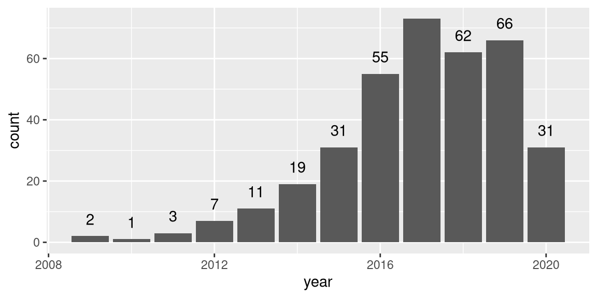
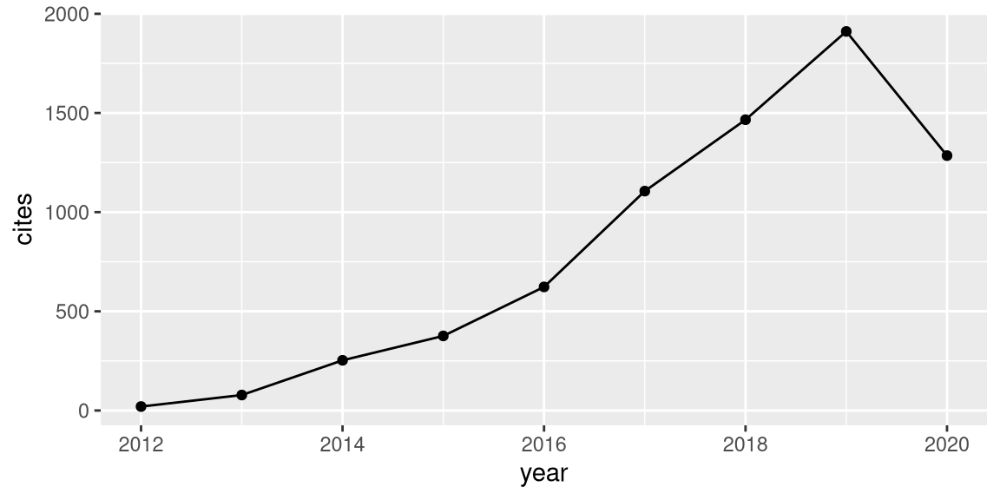

Main
Chris Oldmeadow
I am a biostatistician, bioinformatician and data scientist with over 15 years experience applying statistical methods to public health, clinical and biological data, as well as leading and coordinating the analytical plans across the spectrum of clinical research studies.
Education
University of Newcastle
B.Mathematics (Hons)
Newcastle, Australia
2004
Thesis: Variable length Markov Chains for DNA motif detection
Queensland University of Technology
PhD Statistics
Brisbane, Australia
2009
Thesis: Latent Variable Models in Statistical Genetics
Professional Experience
Director: Clinical Research Design, IT, and Statistical Services
Hunter Medical Research Institute
NSW, Australia
2018 -
- Overseen increases in income by 20% per year
- Increased cost recovery rate by 10% (absolute)
- Expanded biostatistics, data management, and bioinformatic teams
- Chief Investigator over $10 million in competitive funding
- 13 direct reports and heavy workload of analysis and study design
Senior Statistician, Clinical Research Design, IT, and Statistical Services
Hunter Medical Research Institute
NSW, Australia
2013 - 2019
- Co-authored papers at ~50 per year with a high fraction in A or A* journals
- Over $1 million per year in competitive funding
- Supervised a team of ~ 10 statisticians
- Study statistician on a number of large clinical trials
Post doctoral research fellow
Hunter Medical Research Institute
NSW, Australia
2009 - 2013
- Methods development in statistical genetics
- Consultant biostatistician
Post doctoral research fellow
Monash University
Vic, Australia
2009
- Developed methods in Bioinformatics (Bayesian DNA sequence segmentation, information criterion)
Top 5 Publications by citations
| year | author | title | journal | cites |
|---|---|---|---|---|
| 2016 | A Okbay, JP Beauchamp, MA Fontana, JJ Lee, TH Pers, CA Rietveld, … | Genome-wide association study identifies 74 loci associated with educational attainment | Nature | 822 |
| 2013 | CA Rietveld, SE Medland, J Derringer, J Yang, T Esko, NW Martin, … | GWAS of 126,559 individuals identifies genetic variants associated with educational attainment | science | 700 |
| 2016 | A Okbay, BML Baselmans, JE De Neve, P Turley, MG Nivard, MA Fontana, … | Genetic variants associated with subjective well-being, depressive symptoms, and neuroticism identified through genome-wide analyses | Nature genetics | 563 |
| 2013 | A Köttgen, E Albrecht, A Teumer, V Vitart, J Krumsiek, C Hundertmark, … | Genome-wide association analyses identify 18 new loci associated with serum urate concentrations | Nature genetics | 549 |
| 2017 | HR Warren, E Evangelou, CP Cabrera, H Gao, M Ren, B Mifsud, I Ntalla, … | Genome-wide association analysis identifies novel blood pressure loci and offers biological insights into cardiovascular risk | Nature genetics | 293 |
Publications statistics

